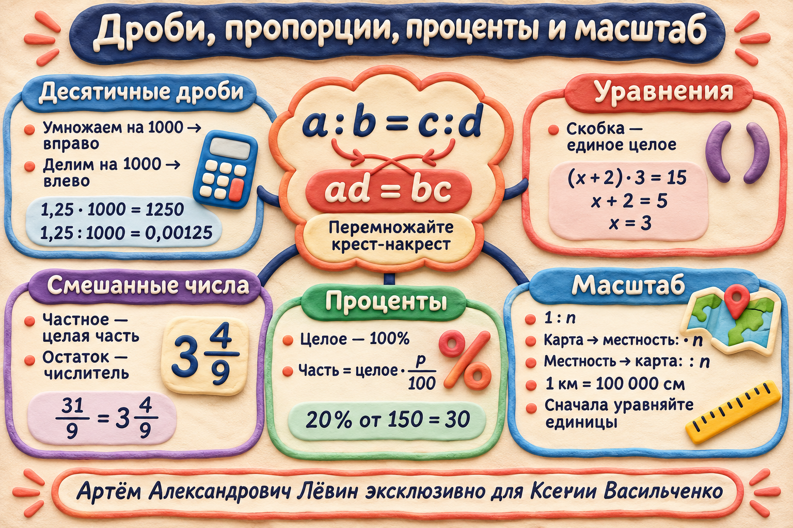

26 ноября 2026 · Подготовка к контрольной
Десятичные дроби, уравнения, пропорции, проценты и масштаб
Сохраняйте разряды, выделяйте неизвестное и приводите величины к одним единицам. Пропорция связывает задачи на проценты и масштаб.
01 / Разряды
Как не потерять запятую
При умножении на 10, 100, 1000 запятая движется вправо, при делении — влево. Число шагов равно числу нулей.
← : 1000
· 1000 →
Если цифр не хватает, допишите нули. 0,0285 · 100 = 2,85; 0,1234 · 1000 = 123,4.
Деление на десятичную дробь
Умножьте делимое и делитель на одинаковое число, чтобы делитель стал целым.
160,82 : 4,3
= 1608,2 : 43 = 37,4
Проверка: 37,4 · 4,3 = 160,82.
Сложение и вычитание
Запятая под запятой, одинаковые разряды друг под другом.
37,4 − 25,3 = 12,1
0,57 + 0,86 = 1,43.
При умножении положительного числа на 100 оно увеличивается в 100 раз: ровно два разряда.
02 / Уравнения
Неизвестный компонент
Скобку считайте одним числом, пока не найдёте её значение. Начинайте с последнего действия.
| Запись | Найти a | Найти b |
|---|---|---|
| a+b=c | c−b | c−a |
| a−b=c | c+b | a−c |
| a·b=c | c:b, b≠0 | c:a, a≠0 |
| a:b=c, b≠0 | c·b | a:c, c≠0 |
При нулевом множителе или частном нельзя делить на нуль: такие ситуации проверяют отдельно.
Скобка как неизвестный множитель
(z + 25,3) · 4,3 = 160,82
z + 25,3 = 160,82 : 4,3 = 37,4
z = 37,4 − 25,3 = 12,1.
Проверка: (12,1 + 25,3) · 4,3 = 160,82.
Неизвестный делитель и вычитаемое
18,6 : t = 3 → t = 6,2.
9,4 − u = 2,7 → u = 6,7.
Числовая часть
y = (0,0285 · 100) : 5 + 0,86
= 2,85 : 5 + 0,86 = 1,43.
03 / Остаток
Выделение целой части
Разделите числитель на знаменатель с остатком. Частное — целая часть, остаток — числитель дробной части.
31 : 9
31 = 9 · 3 + 4
Для a = bq + r, b > 0, 0 ≤ r < b: a/b = q + r/b.
81 : 9 = 9 — если остаток нулевой, пишите целое число. 42 : 8 = 5 2/8 = 5 1/4 — сократите дробную часть.
04 / Отношение
Прямая пропорциональность
При увеличении одной из двух положительных величин в несколько раз другая увеличивается во столько же раз.
| Величина 1 | Величина 2 |
|---|---|
| a | b |
| c | d |
a/b = c/d ⇔ ad = bc
Знаменатели не равны нулю. Одноимённые величины — в одном столбце, соответствующие значения — в одной строке.
05 / Проценты
Целое — 100%
Сначала определите целое, часть и неизвестное. Один процент — одна сотая часть.
| Количество | Проценты | |
|---|---|---|
| Целое | A | 100 |
| Часть | B | p |
100B = Ap
B = Ap/100; A = 100B/p (p > 0); p = 100B/A (A > 0).
Найти часть по проценту
В 3,5 кг золотого сплава содержится 41,5% примесей. Найдите массу примесей с округлением до десятых килограмма.
100x = 3,5 · 41,5 = 145,25 → x = 1,4525 кг ≈ 1,5 кг.
Найти целое по его части
Оливки содержат 64,8% масла. Сколько килограммов оливок содержат 40,5 кг масла?
x = 40,5 · 100 : 64,8 = 62,5 кг.
Найти процентное содержание
В 250 г творога содержится 41,7 г белка. Найдите процент белка.
250x = 4170 → x = 16,68%.
Для состава вещества: 0 ≤ B ≤ A; 0 ≤ p ≤ 100. Округляйте только конечный ответ.
06 / Масштаб
Карта и местность
Масштаб 1:n означает, что одной единице длины карты соответствуют n таких же единиц на местности.
1 м = 100 см · 1 км = 100 000 см
| Карта (см) | Местность (см) |
|---|---|
| 1 | n |
| l | L |
L = ln
l = L : n; n = L : l. Длины положительны, для уменьшенной карты n > 1.
Из карты в действительность
4 см при масштабе 1:10 000 000.
L = 4 · 10 000 000 = 40 000 000 см = 400 км.
Из действительности на карту
5,2 км при масштабе 1:1 000 000.
5,2 км = 520 000 см; l = 520 000 : 1 000 000 = 0,52 см.
Найти масштаб
От рябины до тайника 3,5 м, на плане 4 см. 3,5 м = 350 см; n = 350 : 4 = 87,5. Масштаб 1:87,5.
Сначала приведите обе длины к одной единице. Километры нельзя подставлять в столбец сантиметров.
Маршрут для процентов и масштаба
- Определите величины и неизвестное; проверьте прямую зависимость.
- Проценты: целое = 100%; масштаб: карта = 1, местность = n.
- Приведите величины к одинаковым единицам, заполните таблицу.
- Составьте пропорцию, перемножьте крест-накрест и решите уравнение.
- Проверьте смысл, единицы, округление; запишите ответ.
07 / Путь А
Десять задач для закрепления
Записывайте вычисления последовательно. В задачах на проценты и масштаб составьте таблицу величин и пропорцию.
- Базовый уровень
При подготовке к контрольной работе нужно восстановить правило перемещения запятой. Вычислите без калькулятора: 0,0367 · 100; 2,48 : 1000; 0,1725 · 1000; 45,6 : 100.
- Базовый уровень
Для изготовления одинаковых поделок имеются 47 м ленты. Если разделить её поровну между 8 участниками кружка, сколько метров ленты получит каждый? Запишите результат в виде смешанного числа, выделив целую часть делением с остатком.
- Базовый уровень
В школьном задании требуется найти неизвестный компонент действия. Решите уравнение (x + 14,6) · 2,5 = 53,5. Сначала найдите значение выражения в скобках, затем неизвестное число. Проверьте ответ подстановкой.
- Базовый уровень
Для приготовления напитка взяли 18,9 л воды и разлили её поровну в ёмкости. В каждую ёмкость налили по 2,7 л. Обозначьте число ёмкостей буквой t, составьте и решите уравнение с неизвестным делителем.
- Средний уровень
В упаковке ореховой смеси массой 2,8 кг доля миндаля составляет 37,5% от всей массы. Сколько килограммов миндаля содержится в упаковке? Округлите ответ до десятых долей килограмма.
- Средний уровень
На туристической карте масштаба 1:250 000 расстояние между двумя населёнными пунктами изображено отрезком длиной 6,4 см. Найдите соответствующее расстояние на местности. Ответ выразите в километрах.
- Выше среднего уровень
На предприятии перерабатывают семена подсолнечника. Масса масла, содержащегося в семенах, составляет 42% от массы семян. Какую массу семян необходимо взять, чтобы в них содержалось 31,5 кг масла? Ответ выразите в килограммах. Потери при переработке не учитывайте.
- Выше среднего уровень
На этикетке упаковки творога указано, что масса творога без упаковки составляет 240 г, а масса содержащегося в ней белка — 39,6 г. Определите процентное содержание белка в твороге. Результат запишите в процентах.
- Выше среднего уровень
Длина участка железной дороги на местности составляет 432 км. Для школьного проекта этот участок нужно изобразить на двух картах: первая имеет масштаб 1:20 000 000, вторая — 1:25 000 000. Какой длины в сантиметрах будет соответствующий отрезок на каждой карте? Сравните результаты и укажите, на какой карте отрезок длиннее.
- Повышенный уровень
Ребята составили план школьного двора. Расстояние от входа в школу до дерева на местности равно 7,5 м, а на плане оно изображено отрезком длиной 6 см. Определите масштаб плана в виде 1:n. Затем найдите, каким отрезком на этом же плане будет изображена дорожка длиной 12,5 м. Длину отрезка выразите в сантиметрах.
Выполнено: 0 из 10
Показать ответы
| № | Ответ |
|---|---|
| 1 | 3,67; 0,00248; 172,5; 0,456 |
| 2 | 5 7/8 м |
| 3 | x = 6,8 |
| 4 | 18,9 : t = 2,7; t = 7 ёмкостей |
| 5 | 1,1 кг |
| 6 | 16 км |
| 7 | 75 кг |
| 8 | 16,5% |
| 9 | 2,16 см и 1,728 см; на первой карте длиннее |
| 10 | 1:125; 10 см |
08 / Материалы
Повторение на бумаге
Проверьте направление запятой, подстановку, выбор целого, единицы длины и округление.

